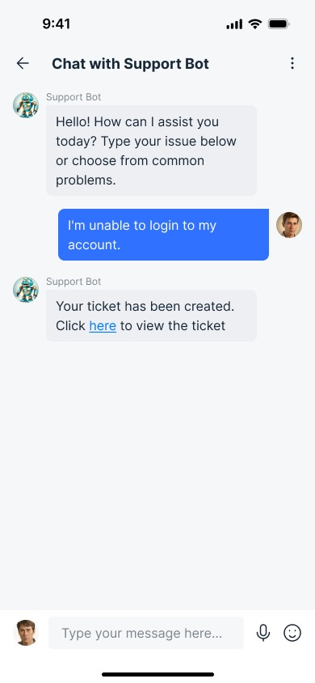
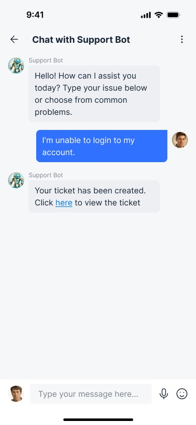

Craigslist Case Study

OVERVIEW
At a glance, this website contains over 20 pages, and has a few functionally embedded elements. Its complex and confusing UI can make it challenging for visitors to browse and locate the content they're looking for. Individuals seeking to exchange, purchase, sell, or rent different products and services go to Craigslist to locate listings in their neighborhood. Companies and job seekers frequently use this website to submit job advertisements and locate employment possibilities.
Categories and subcategories may not always be clearly organized, making it difficult to find specific listings. This confuses the user and they might be unsure where to start, proceed, or focus their attention. So, systematic methods were used like interviews, personas, and heuristic evaluation in order to learn more about their opinions, experiences, and recommendations for enhancements.
Focus areas
- UI design: Design system, typography, visual layouts
- UX strategy: Personas, flowcharts, task flows, navigation system, usability testings
- User research: User interviews, market research, stakeholder interviews.
Roles and responsibilities
Role: This is my academic project and I worked on the scripts of user interviews & usability testing, creating personas, and writing learnings & analysis.
Design: I worked on the internal architecture of the application, wireframes, and both low & mid-fidelity prototypes.
Skills and tools used: Prototyping, Figma, Notion, User Research, Wireframing, Justinmind.
PROBLEM STATEMENT
Users struggle with finding relevant listings as category mappings don't align with their expectations, while the lack of feedback mechanisms causes uncertainty in interactions. These issues hinder the overall user experience, making it difficult to efficiently browse and interact with the platform.
"How can Craigslist's user interface and experience be improved to enhance the visibility of critical information, provide clearer feedback to users, ensure intuitive affordances, and better align category structures with users' expectations, thereby making the site easier to navigate and use for its diverse audience?"
It follows all the below issues present in the website as shows:
Visibility: The website may make it difficult for consumers to find useful information fast. Furthermore, a lack of visual hierarchy and design features can reduce visibility.
Feedback : Craigslist lacks appropriate feedback mechanisms that allow users to categorize or review merchants and buyers, creating uncertainty.
Affordances: The site's design does not always provide obvious clues or affordances for visitors to learn how to interact with features like buttons or links.
Mappings: The mapping of categories and subcategories may not necessarily correspond to users' mental models or expectations, making it difficult to browse the site effectively.

WORK FLOW
The UX design process I employed for this project follows a comprehensive, user-centered approach. It begins with in-depth research through user interviews, followed by a synthesis phase where I develop user personas. The ideation stage involves sketching potential screen designs, which are then refined based on feedback from initial user testing. This leads to the creation of high-fidelity wireframe prototypes. The process concludes with a cognitive walkthrough, involving detailed user testing to ensure the final design meets user needs and expectations. This iterative methodology ensures that user insights inform every stage of the design process, resulting in a product that truly resonates with its intended audience.
INTERVIEW QUESTIONS
I led the user interviews as the only member on the team with prior experience in conducting user research.
Criteria: Participants were selected based on their frequent use of Craigslist for buying or selling items and their familiarity with similar online platforms.
I began the interviews with open-ended questions to understand users' general browsing and listing behaviors on Craigslist. This helped us explore their typical interactions with the platform, such as finding products, posting listings, or responding to ads. Next, I focused on their frustrations and expectations when using the site, aiming to uncover challenges like navigating categories, interacting with sellers, or managing listings.
After learning about their experiences, I asked participants to share their thoughts on potential improvements or desired features, particularly around feedback mechanisms, search functionality, and user interfaces. I also inquired about their comfort level with performing transactions and communicating with other users on the platform. Lastly, I explored their awareness and attitudes toward AI-driven tools for better listing recommendations or buyer-seller interactions.
These interviews provided deep insights into the current pain points of Craigslist's user experience, revealing critical areas for design improvements.
These questions were designed for collecting specific feedback and insights from participants, focusing on important areas of concern and potential improvement.
- Do you feel that users can easily find and purchase the products they are looking for on the website?
- Were there any tasks you performed on the website that you found difficult or frustrating?
- Do you find the layout of the website is straightforward and simple to navigate?
- How do you think the layout could be improved to make it more user-friendly?
- Do you have any specific suggestions?
- On a scale of 1 to 5, how concerned are you about privacy and data security in ad websites?
These questions provided us with a deep understanding of how people perceive the process, the challenges they face, and the technological improvements needed.
USER PERSONAS
The steps involve examining the Baltimore Craigslist platform, identifying its strengths and weaknesses. This study focuses on two primary user groups: buyers seeking efficient communication and explorers looking for streamlined search functionality. By examining their unique needs, I aim to propose innovative solutions that enhance the user experience on Craigslist.

.png)
These insights have led to the development of two distinct prototypes: one focusing on live chat functionality and the other on enhanced filtering capabilities.
Moving forward, I aim to proceed with user testing for both prototypes to evaluate their effectiveness in addressing the specific pain points of these user groups. The results will guide further iterations and refinements, ensuring that the proposed features improve overall user satisfaction and usability on Craigslist.
PROTOTYPES
The prototype design looks to be a basic sketch or wireframe that depicts several layout and interaction aspects for a website or application. I started with a paper and pencil sketches for our screen designs. We wanted to map out what features each screen will have, the number of steps the user will have to take to achieve a goal and task flows.
Low Fidelity Prototyping
The steps involve examining the Baltimore Craigslist platform, identifying its strengths and weaknesses. The persona and scenario research provided useful insights into the usability issues affecting users such as Michael, a young professional seeking affordable accommodation, and Emily, an experienced event planner trying to effectively market her events.
Task 1: To submit a support ticket for assistance with an issue encountered on the website.

This prototype addresses a design issue found through heuristic review while also incorporating insights from competition analysis to ensure alignment with industry standards and user expectations. Screen 1 displays the home page, with options for assistance, safety, privacy, and terms. Clicking the assistance button takes you to screen 2, where you can "contact us" and "raise tickets" before moving on to screen 3, which has a form for entering personal information and a "Concern box". Following submission, the last screen shows the ticket number and feedback. Finally, I find this to be the most effective website because many customers like a simple user experience, therefore creating a ticket may be the easiest approach. The simplicity of the design, with clearly labeled buttons and forms, reflects an understanding of users' preferences for straightforward navigation.
Task 2: To optimize product browsing and selection through the implementation of filtering tools.

The design choices in the prototype were made intentionally to address specific design issues identified through competitive analysis. Many popular websites feature filtering tools that allow users to restrict their search parameters, making it easier to find relevant products or information. In this prototype, there are a total of three screens where 2 filters have been added. When the user goes to the services section. In screen 2 when the user clicks on the filters dropdown there are few options namely “low to high” and “newest to oldest”. This helps users to understand how to select the required products based on their interest. This method makes the prototype more accessible than other alternatives since it streamlines the user experience, allowing consumers to easily explore and obtain the information or items they require. The usage of filters demonstrates an awareness of user behavior and preferences, which improves the prototype's overall usability.
High Fidelity Prototyping
These wireframes perform well during the design exploration stage. These assisted us in validating the design before proceeding to the visual design phase. Additionally, these are more functional compared to low fidelity however the functionalities are limited.
However, during the mid-fidelity prototyping phase, I asked two users to review the low-fidelity prototype and provide feedback, which I then used to design my two prototypes accordingly.
Prototype 1 :
Incorporating user feedback is critical for enhancing goods and ensuring they match customer expectations. Two users who previewed this prototype stressed the significance of improving the help and support settings. A popular request was to include a "live chat" option that would allow users to speak directly with support professionals in real time. Live chat may dramatically improve the user experience by giving prompt assistance when queries or problems arise. Instead of perusing many help menus or waiting for email responses, customers may start a chat session and get immediate, tailored help from qualified support professionals. If necessary, the chat bot automatically issues tickets, which the user can cancel if he or she does not want to. This real-time engagement can help consumers swiftly solve problems, learn how to use specific features successfully, and clarify any confusing aspects of the product. Below screenshot shows the high fidelity prototype done in figma.


 



Prototype 2 :
Emphasizing the possibilities for improving the user experience, User 1 suggested adding a "location" filter option. This feature offers an easy way for people looking for goods or services in several locations by enabling customers to switch between them without any trouble at all. The location filter enables users to precisely customize their searches, whether they are looking to compare rates, look into local offerings, or just go for convenience. As users navigate different geographic locations, this functionality not only makes the search process more efficient but also meets the needs of a wide range of users. The incorporation of the location filter enhances the usefulness of the platform by providing users with increased flexibility and efficiency when attempting to locate items.
User 2 suggested adding a "rating" option, underlining its importance in providing users with vital information about seller reliability and reputation. By presenting profile ratings, consumers may make informed judgments based on previous customer experiences. This tool promotes transparency and trust among the platform's community by allowing users to rate vendors based on their performance and customer happiness. Furthermore, the rating system encourages merchants to maintain high levels of service and reliability. With this update, consumers can confidently traverse the marketplace, knowing they have access to relevant information to help them make informed purchasing decisions.
COGNITIVE WALKTHROUGH
- Given the user a task to do
- Observed them performing task
- Identified what they are searching for and whether there are issues with the process
- Documented what they said and do on each web page
| # | What was the user's goal? | Is the action available? | Does the action or label match the goal? | Is there good feedback? |
|---|---|---|---|---|
| 1 | Create a support ticket or raise an issue with Craigslist Baltimore in prototype 1 | Yes, there is an option for "Live Chat" and "Contact Us/Raise Tickets" in the help pages menu | Yes, the "Contact Us/Raise Tickets" option directly matches the goal of creating a support ticket | Yes, after completing the steps, there is a confirmation message saying "Your ticket has been created successfully" |
| 2 | Navigate back to the home page Is the action available in prototype 1 | Yes, there is an option to "Click here to navigate to home page" in all three frames | Yes, the label directly matches the goal of navigating to the home page | While no explicit feedback is shown, navigating to the home page would likely provide a clear indication of successful navigation |
| 3 | Finding a job listing for a software developer role in prototype 2 | Yes, the "Jobs" category link is prominently displayed on the main page, indicating that job listings can be accessed. | Yes, the "Jobs" label directly matches the user's goal of finding job listings, specifically for software developer roles. | The search results page displays placeholders for job listings, indicating that selecting the "Jobs" link will populate that area with relevant job postings, indicating progress toward the goal. |
User Task: I assigned tasks such as creating a support ticket, navigating the website, and searching for job listings. You observed users perform these tasks and documented their actions and feedback.
Process:
- Users could create a support ticket using the options provided under the "Help" menu, such as "Live Chat" and "Contact Us/Raise Tickets." The labels clearly matched the users' goals, and users received confirmation feedback once their ticket was created.
- Navigation back to the home page was easily accomplished through links available across frames, though no explicit feedback was provided when successfully navigating home.
- Identified what they are searching for and whether there are issues with the process
- Users looking for job listings could easily find the "Jobs" link, which matched their goal, and the search page indicated progress by displaying job listing placeholders.
Key Observations:
- Users could find and use the necessary actions to achieve their goals.
- Labels and actions consistently matched user expectations, ensuring ease of navigation and task completion.
- Feedback mechanisms, while present in some cases, could be improved for more transparency, such as providing feedback when navigating back to the home page
- Users looking for job listings could easily find the "Jobs" link, which matched their goal, and the search page indicated progress by displaying job listing placeholders.
My Learnings
Through this project, I deepened my understanding of user experience design and research. Leading user interviews helped me develop skills in gathering and analyzing user feedback, which I then applied to create more user-centered design solutions. I also learned the importance of validating design choices through usability testing, particularly when refining prototypes to address specific pain points.
- Conduct thorough competitive analysis to benchmark design standards.
- Develop user personas that accurately reflect the needs and behaviors of diverse users
- Prototype solutions that improve core features like filtering options and live chat functionality, ensuring a more intuitive user experience.